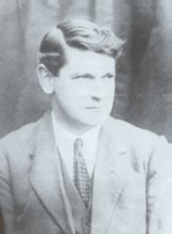

The Formation of Dail Eirann
In June of 1917 Eamon DeValera was released for prison. By the October of that year he was elected President of Sinn Fein. With the help of other leaders they formed Dail Eirann. This was now a new government for the people of Ireland. By the May of 1918 deValera was arrested once more under suspicion of plotting to overthrow England and help the Germans in a plot for a world war.
In 1919 with the help of fellow Sinn Feinner Michael Collins, he escaped from Lincoln jail. By this stage the war of Independence had begun in Ireland. This war was led by Eamon DeValera’s soon to be rival Michael Collins. Both men had the same goal in mind but had different theories on how to achieve it.
Michael Collins
http://www.iol.ie/~jnelson/After the escape from jail deValera returned to Ireland to continue his role of revolutionary activity. In June 1919 he left for America. This trip was intended to raise money and improve foreign relations with the United States. DeValera also hoped to gain awareness for Ireland’s need for Independence. However deValera came under a lot of criticism for this move. Many of his colleagues believed that some fundraisers could have easily made this trip. When he returned from America he had a total of five million dollars raised.
In 1921 deValera began negotiations with the Prime Minister of England Lloyd George. He hopes to gain a true Irish Republic failed. Soon after these negotiations DeValera formed a party of delegates to go and negotiate a truce to end the war of Independence. Michael Collins and Arthur Griffith led these negotiations. These negotiations came to a head in December of 1921 when Lloyd George put pressure on the delegation party to sign the so-called "Treaty".